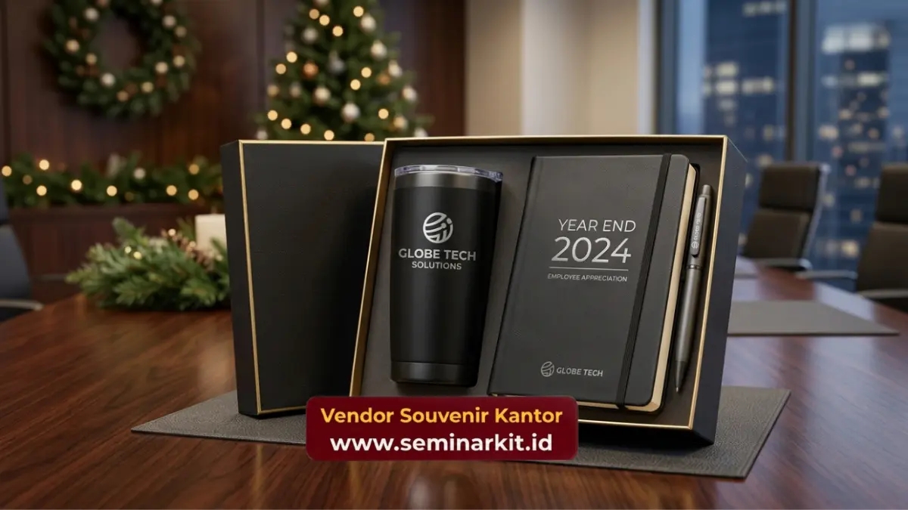

Souvenir employee appreciation paling efektif diberikan pada momen spesifik seperti anniversary kerja, pencapaian target, Employee Appreciation Day, dan perayaan akhir tahun perusahaan.
Ketepatan momentum menentukan seberapa besar makna apresiasi dirasakan karyawan penerima.
- Anniversary kerja menjadi momen paling umum untuk pemberian souvenir individual
- Employee Appreciation Day dapat dijadikan agenda tahunan yang konsisten
- Pencapaian target tim layak diapresiasi dengan souvenir bertema pencapaian
- Perayaan akhir tahun menjadi momentum besar untuk hampers eksklusif
- Momentum personal karyawan juga dapat menjadi kesempatan pemberian souvenir
Anniversary Kerja sebagai Momen Apresiasi Individual
Anniversary kerja karyawan merupakan momen paling umum digunakan perusahaan untuk memberikan souvenir employee appreciation secara individual, sebagai bentuk pengakuan atas loyalitas dan kontribusi jangka panjang karyawan terhadap perusahaan.
Penghargaan pada momen anniversary biasanya disesuaikan dengan lama masa kerja, di mana milestone seperti satu tahun, lima tahun, atau sepuluh tahun sering dijadikan patokan pemberian souvenir dengan tingkat eksklusivitas yang berbeda.
Semakin lama masa kerja karyawan, semakin tinggi pula tingkat personalisasi dan kualitas souvenir yang diberikan.
Pendekatan ini membantu perusahaan menunjukkan bahwa loyalitas karyawan benar-benar diperhatikan dan dihargai secara konkret, bukan hanya melalui pengakuan verbal semata.
Menentukan Tingkat Souvenir Berdasarkan Masa Kerja
Beberapa perusahaan menerapkan sistem bertingkat dalam menentukan jenis souvenir anniversary, misalnya souvenir sederhana untuk tahun pertama dan souvenir eksklusif untuk milestone lima tahun ke atas, guna menciptakan rasa pencapaian yang berjenjang bagi karyawan.
Employee Appreciation Day sebagai Agenda Tahunan
Employee Appreciation Day dapat dijadikan agenda tahunan yang konsisten oleh perusahaan untuk memberikan souvenir employee appreciation secara serentak kepada seluruh karyawan, memperkuat budaya apresiasi secara menyeluruh dalam organisasi.
Momen ini biasanya dirayakan dengan pemberian souvenir yang lebih ringan namun tetap bermakna, mengingat sifatnya yang menyeluruh dan tidak terbatas pada individu tertentu.
Konsistensi perayaan Employee Appreciation Day setiap tahun turut membangun ekspektasi positif karyawan terhadap perhatian perusahaan.
Pencapaian Target sebagai Momentum Apresiasi Kinerja
Pencapaian target tim atau individu menjadi momentum yang tepat untuk memberikan souvenir employee appreciation karena secara langsung mengaitkan apresiasi dengan hasil kerja nyata yang telah dicapai karyawan.
Souvenir yang diberikan pada momen ini idealnya mencerminkan skala pencapaian, misalnya souvenir personal untuk pencapaian individu dan hampers tim untuk pencapaian target bersama.
Pendekatan ini memperkuat motivasi karyawan untuk terus mempertahankan atau meningkatkan kinerja pada periode berikutnya.
Perayaan Akhir Tahun sebagai Momentum Besar
Perayaan akhir tahun perusahaan menjadi momentum besar untuk memberikan souvenir employee appreciation dalam bentuk hampers eksklusif, sebagai bentuk penutup evaluasi kinerja sepanjang tahun sekaligus penyemangat menghadapi tahun berikutnya.
Pada momen ini, perusahaan umumnya mengalokasikan anggaran yang lebih besar dibandingkan momen apresiasi rutin lainnya.
Hampers akhir tahun biasanya berisi kombinasi produk premium yang mencerminkan skala perayaan dan rasa terima kasih perusahaan atas kontribusi karyawan selama satu tahun penuh.

Momentum Personal Karyawan
Momen personal karyawan seperti pernikahan, kelahiran anak, atau kelulusan pendidikan lanjutan juga dapat menjadi kesempatan bagi perusahaan untuk memberikan souvenir employee appreciation sebagai bentuk perhatian di luar konteks pekerjaan.
Pendekatan ini menunjukkan bahwa perusahaan memandang karyawan secara utuh, tidak hanya sebagai sumber daya kerja, tetapi juga sebagai individu dengan kehidupan personal yang layak diperhatikan dan dirayakan bersama.
Merancang Kalender Momentum Apresiasi
Merancang kalender momentum apresiasi karyawan membantu perusahaan memastikan program souvenir employee appreciation berjalan konsisten sepanjang tahun, tanpa terlewat pada momen-momen penting yang seharusnya dirayakan.
Kalender ini dapat mencakup jadwal anniversary kerja karyawan, agenda Employee Appreciation Day, periode evaluasi target, hingga perayaan akhir tahun, sehingga tim HR dapat mempersiapkan kebutuhan souvenir jauh sebelum momen tersebut tiba.
Ketepatan momentum menjadi faktor penting dalam efektivitas souvenir employee appreciation, mulai dari anniversary kerja, Employee Appreciation Day, pencapaian target, hingga perayaan akhir tahun perusahaan.
Perusahaan yang merancang kalender apresiasi secara konsisten cenderung membangun budaya kerja yang lebih positif dan berkelanjutan.
Untuk mempersiapkan souvenir employee appreciation di berbagai momen spesial tersebut, kunjungi vendorsouvenirkantor.web.id dan konsultasikan jadwal serta kebutuhan perusahaan Anda.

Banner promosi: klik gambar untuk langsung terhubung ke WhatsApp tim sales.